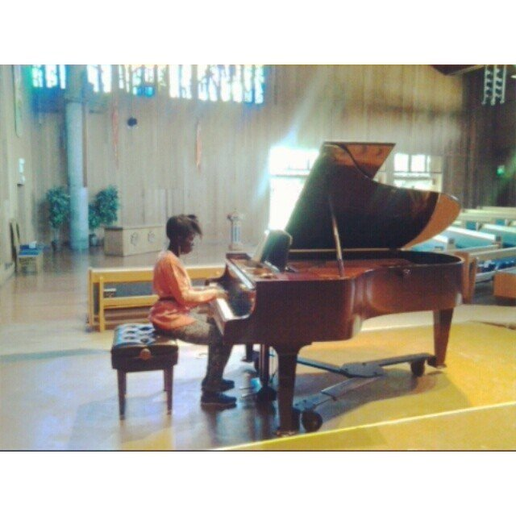
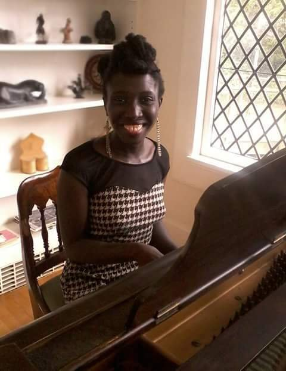
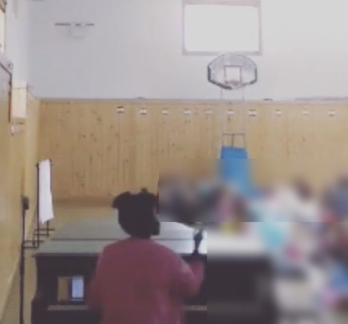

Live
Shows
Past
Past performances
Performing original compositions live since 1998. Selected archive, 2008–2023.


Highlights
- 2007The Village Underground
New York, NY - 2007CBGB
New York, NY - Mar & May 2017Freight & Salvage Coffeehouse
Berkeley, CA
- Sep 3, 2017Rockwood Music Hall
New York, NY - 2018–2023“Big Sing”, The Common School
Amherst, MA · Director of Music
2017
- Sep 3Rockwood Music Hall
New York, NY - Mar 28 · May 16Freight & Salvage Coffeehouse
Berkeley, CA
2014
- Jan 28The Claremont Hotel
Berkeley, CA - Feb 11The Bancroft Hotel
Berkeley, CA - Feb 13 & 15The Berkeley City Club
Berkeley, CA · Julia Morgan: The Musical, original composition - Feb 28Spice Monkey
Oakland, CA - Mar 21The Red Room
Oakland, CA - Apr 3Nabolom Bakery
Berkeley, CA - May 4Maybeck Rose Walk
Berkeley, CA · pianist, Berkeley Architectural Heritage Association - ResidencyCaffe Mediterraneum
Berkeley, CA · Feb–May 2014 - ResidencySaul’s Restaurant & Delicatessen
Berkeley, CA · Sunday brunch, Mar–Jun 2014 - ResidencyBerkeley Architectural Heritage Association
Berkeley, CA · piano, Mar–May 2014 - ResidencyThe Point at Rockridge
Oakland, CA · Mar–May 2014 - ResidencySt. John’s Presbyterian Church
Berkeley, CA · Feb–Jul 2014 - ResidencySliver Pizzeria
Berkeley, CA · Feb–Apr 2014 - ResidencyAlameda Free Library
Alameda, CA · family sing-along, Feb–Apr 2014
2013
- Dec 29Starry Plough
Berkeley, CA · Lemon Tree Sessions
2012
- Feb 28The Flatiron Hotel
New York, NY - Feb 12 & 19Kave Espresso Bar & Event Space
Brooklyn, NY - Feb 19Trix
Brooklyn, NY
2011
- Sep 14Otto’s Shrunken Head
New York, NY - Aug 5Amherst College
Amherst, MA - Jul 29Symphony Space
New York, NY - Jul 21Paris Blues
New York, NY - Jun 21Make Music New York
Oasis Community Garden, New York, NY · McKinley’s Children’s Garden, Queens, NY - May 26Club Meadows
East Longmeadow, MA
2010
- Sep 23The National Underground
New York, NY - Jul 8WBAI 99.5 FM
New York, NY · live on air
2009
- Aug 2009Le Poisson Rouge
New York, NY - Jul 16Sugar Bar
New York, NY - Jul 2009Drom
New York, NY - Jul 6Kenny Castaways
New York, NY - Feb 25Spike Hill
Brooklyn, NY - Feb 18Evening Muse
Charlotte, NC - Feb 13New Orleans
New Orleans, LA - Feb 4The Brick
Kansas City, MO - Jan 4The Delta
Nashville, TN - Jan 3Findley’s
Nashville, TN
2008
- Oct 1Public Assembly
Brooklyn, NY · Home Sweet Home - Aug 20Mike & Juliet, FOX TV
New York, NY · live TV performance - Jun 21Make Music New York
New York, NY - May 31The Habitat
Greenpoint, Brooklyn, NY - May 22Jadis
New York, NY - May 9Starbucks Greenpoint
Brooklyn, NY